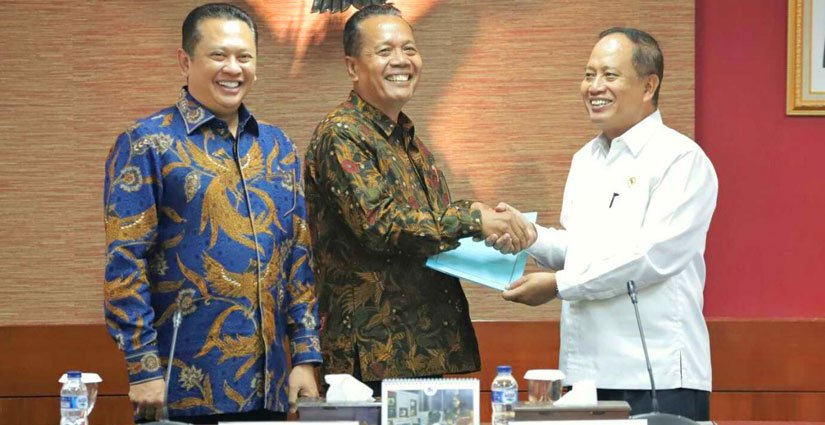

Tahun ini Indonesia mengirim tim pelajar dari Madura dengan game yang mereka kembangkan
Cabang kompetisi yang dapat diikuti diantaranya Games, Innovation, World Citizenship, Hello Cloud, dan Earth. Pemenang dari setiap cabang kompetisi, akan berkesempatan terbang ke Kantor pusat Microsoft di Seattle, Amerika Serikat untuk saling berkenalan dan berkompetisi dengan peserta lainnya di seluruh dunia.
Compfest merupakan acara IT tahunan yang diselenggarakan oleh mahasiswa Fakultas Ilmu Komputer (Fasilkom) Universitas Indonesia. Dirintis sejak tahun 2009, sekarang Compfest hadir dengan berbagai cabang lomba berskala nasional yang berkolaborasi dengan berbagai perusahaan IT besar. Tidak hanya kompetisi, Compfest juga dimeriahkan dengan pameran TI yang diisi oleh puluhan startup, perusahaan, dan komunitas IT di Indonesia. Acara ini ditutup dengan seminar yang turut dimeriahkan oleh berbagai musisi papan atas Indonesia dan diisi oleh nama-nama besar penggiat IT Indonesia.
Indosat hadir mencari talenta terbaik generasi muda seluruh Indonesia. IWICdiperuntukkan untuk kamu yang penuh daya kreativitas dalam menuangkan ide brilian dan bahkan mewujudkannya dalam bentuk aplikasi keren yang memberikan manfaat untuk menjadikan Indonesia lebih baik. Cukup dengan ide dan proposal sederhana, kamu sudah bisa menjadi bagian dari salah satu perhelatan IT terbesar di Indonesia ini. Pemenang akan berkesempatan mengasah lebih dalam lagi jiwa entrepreneurship di Jakarta Founder Institute dan Crowdtivate.

INAICTA merupakan kompetisi akbar berskala nasional bidang Teknologi Informasi dan Komunikasi. Acara ini mendapat dukungan penuh dari Kementerian Komunikasi dan Informatika Indonesia dalam rangka memberikan apresiasi terhadap karya-karya terbaik kreasi anak bangsa.
INAICTA memiliki tujuan yaitu hasil karya dari kompetisi dapat menjadi sarana untuk peningkatan inovasi dan kreativitas masyarakat di bidang Teknologi Informasi dan Komunikasi. Hasil karya diharapkan dapat bersaing bahkan menguasai dan merajai pasar teknologi di kawasan negara ASEAN dalam kerangka Masyarakat Ekonomi ASEAN (MEA).
Kategori kompetisi yang dapat diikuti di antaranya Health & Well-Being, Tourism & Hospitality, Education & Culture, Financial & SME, Research & Development, Games, Digital Interactive Media, Digital Animation, Student Project Application, Student Project Games, e-Inclusion & Sustainability, dan Applicative Robot.
Tunggu apa lagi? Jadilah bagian dari pegeleran-pegelaran IT terbesar di Indonesia ini. Selain sebagai sarana tolok ukur penguasaan hard skill, dengan kompetisi-kompetisi di atas kamu juga dapat memperluas jaringan pertemanan, memperdalam pengetahuan di bidang IT, dan sebagai sarana lebih dekat dengan perusahaan yang ingin kamu tuju untuk bekerja.